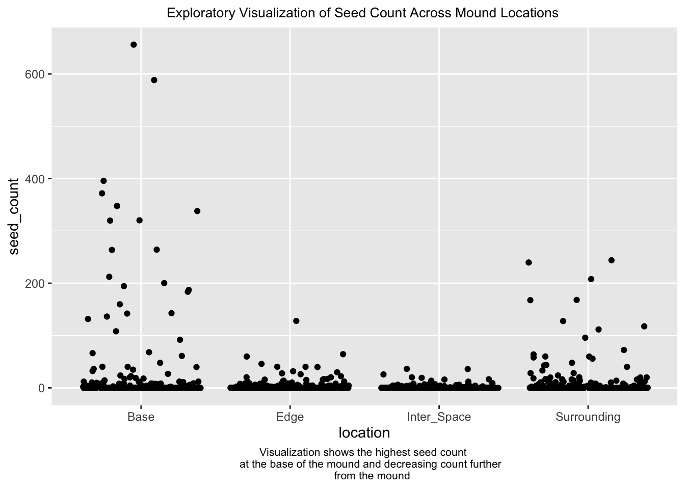
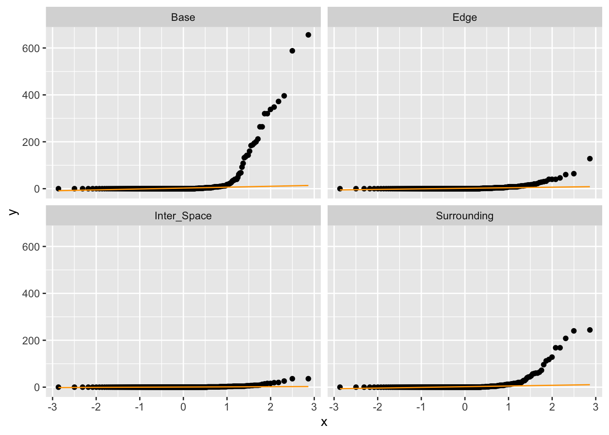

Code
library(here)
library(tidyverse)
library(utils)
library(readr)
library(janitor)
library(dplyr)
library(naniar)
library(ggplot2)
library(performance)
library(effsize)
library(rstatix)H0: There is no relationship between Kangaroo Rat Mound Location and total seed count.
HA: There is a relationship between Kangaroo Rat Mound Location and total seed count.
Significance level = 0.05
library(here)
library(tidyverse)
library(utils)
library(readr)
library(janitor)
library(dplyr)
library(naniar)
library(ggplot2)
library(performance)
library(effsize)
library(rstatix)Initial data wangling:
# reading in the data
kratseed <- read.csv("~/github/ENVS-193DS_final/data/knb-lter-sev.208.102459/sev208_kratseedbank_20120213.txt") %>%
# make the column names cleaner
clean_names() %>%
# renaming columns
rename(c("location" = "loc", "seed_count" = "seeds")) %>%
# selecting the columns of interest
select(location, seed_count) %>%
# renaming locations
mutate(location = case_when(
location == "B" ~ "Base of Mound",
location == "D" ~ "Surrounding Mound",
location == "E" ~ "Edge of Mound",
location == "I" ~ "Inter Space of Mound"))Visualizing missing data:
# visualizing missing data
gg_miss_var(kratseed) +
labs(title = "Missing Data Visualization of Mound Locations and Seed Count",
caption = "Visualization shows no missing data for mound locations nor seed counts") +
theme(plot.title = element_text(size = 10, hjust = 0.5)) +
theme(plot.caption = element_text(size = 9, hjust=0.5))Exploratory Visualization:
# plotting an exploratory visualization
ggplot(data = kratseed, aes(x = location, y = seed_count)) +
geom_jitter() +
labs(title = "Exploratory Visualization of Seed Count Across Mound Locations ",
caption = "Visualization shows the highest seed count
at the base of the mound and decreasing count further
from the mound") +
theme(plot.title = element_text(size = 10, hjust = 0.5)) +
theme(plot.caption = element_text(size = 8, hjust=0.5))
Visually checking for normality of variables and distribution with a histogram and QQ Plot:
# checking histogram for independence of variables and spread
histogram <- ggplot(data = kratseed, aes(x = seed_count)) +
geom_histogram(bins = 20) +
labs(x = "Seed Count", y = "Count") +
theme_bw()
histogram
# checking qq plot for normality
ggplot(data = kratseed) +
stat_qq(aes(sample = seed_count)) +
stat_qq_line(aes(sample = seed_count), color = "orange") +
facet_wrap(~ location)
Using the Shapiro Wilk test to check for normal distribution:
# The p-value of the Shapiro-Wilk Test is greater than 0.05. Meaning the data significantly deviates from a normal distribution.
shapiro.test(kratseed$seed_count)
Shapiro-Wilk normality test
data: kratseed$seed_count
W = 0.18134, p-value < 2.2e-16The QQ plot shows that the sample distribution is not linear or normally spread. The histogram visualization shows that the distribution of the seed count data is not normally distributed. And the Shapiro-Wilk test (p-value < 0.05) shows that the data deviates from a normal distribution as well. Therefore, a non-parametric alternative to a one-way ANOVA (Kruskal-Wallis test) is performed to compare the seed counts between rat mound locations.
kruskal.test(seed_count ~ location, data = kratseed)
Kruskal-Wallis rank sum test
data: seed_count by location
Kruskal-Wallis chi-squared = 21.932, df = 3, p-value = 6.738e-05From the Kruskal-Wallis test, we can conclude that there are significant differences between the treatment groups because the p-value is less than the significance value of 0.05 (p-value = 6.738e-05). Multiple pairwise comparisons between groups were conducted and we know there is a substantial difference between groups based on the Kruskal-Wallis test’s results, but we don’t know which pairings of groups are different. The function pairwise.wilcox.test() can be used to calculate pairwise comparisons between group levels with different testing corrections.
# calculating pairwise comparisons between location
pairwise.wilcox.test(kratseed$seed_count, kratseed$location)
Pairwise comparisons using Wilcoxon rank sum test with continuity correction
data: kratseed$seed_count and kratseed$location
Base of Mound Edge of Mound Inter Space of Mound
Edge of Mound 0.5616 - -
Inter Space of Mound 4.1e-05 0.0056 -
Surrounding Mound 0.5616 0.9000 0.0056
P value adjustment method: holm The results of the Pairwise Wilcox Test show that not all of the mound locations significantly differ in seed counts, but that the Inter-Space of the mound has a significant difference in seed count between all three other locations (p.value = 4.1e-05 when compared to the Base of the mound, 0.0056 with the Edge of the mound, and 0.0056 with the Surrounding of the mound).
Final Visualization of total seed count by Kangaroo Rat mound location:
# visualization of total seed count by mound location
ggplot(data = kratseed, aes(x = location,y = seed_count)) +
# adding colors for mound locations
geom_bar(stat = "identity", aes(fill = location)) +
# change legend title
scale_fill_discrete(name = "Mound Location") +
theme_classic() +
labs (x = "Mound Location",
y = "Total Seed Count",
title = "Total Seed Count by Kangaroo Rat Mound Location",
caption = "Visualization of the total seed count in all four Kangaroo rat mound locations.") +
theme(plot.title = element_text(size = 12, hjust = 0.5)) +
theme(plot.caption = element_text(size = 7, hjust=0.5)) text = element_text(family = "Times New Roman")# reading in community flower counts data
comflowercount <- read_csv(here("data", "knb-lter-nwt.297.1", "shrubstudy_community_flower_counts.ms.data.csv"))
# reading in individual flower counts data
indflowercount <- read_csv(here("data", "knb-lter-nwt.297.1", "shrubstudy_individual_flower_counts.ms.data.csv"))
# reading in pollinator counts data
pollinators <- read_csv(here("data", "knb-lter-nwt.297.1", "shrubstudy_pollinator.ms.data.csv"))
# reading in seed counts data
seeds <- read_csv(here("data", "knb-lter-nwt.297.1", "shrubstudy_seed_ctwt.ms.data.csv"))